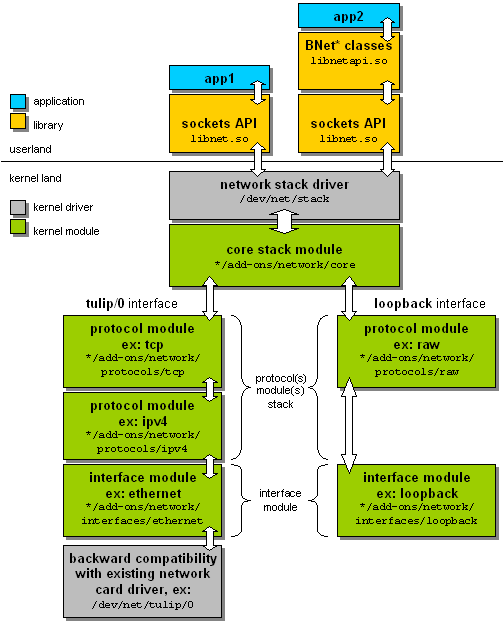

Haiku Network Kit: Overview
The Haiku Network Kit consists of:
A modular, add-ons based
network stack
Two shared libraries,
libnet.so
and
libnetapi.so
A
stack driver
, acting as interface between the
network stack
and
libnet.so
Basic
network apps
A modular GUI
preflet
A picture may talk better?
The following image shows the overall network design:

Philippe Houdoin, July 30th, 2004